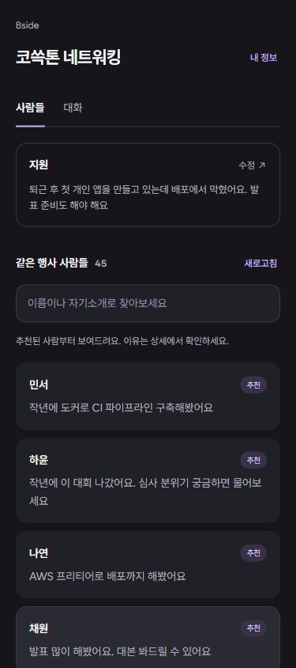
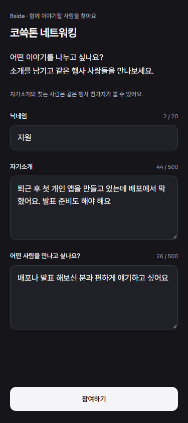
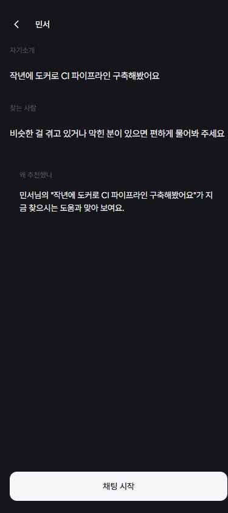
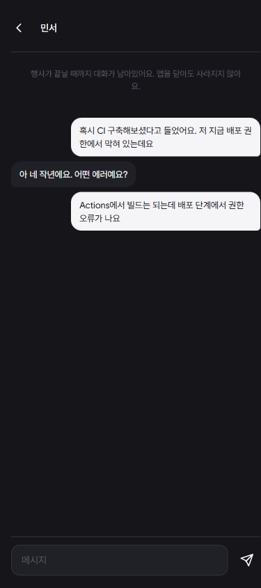
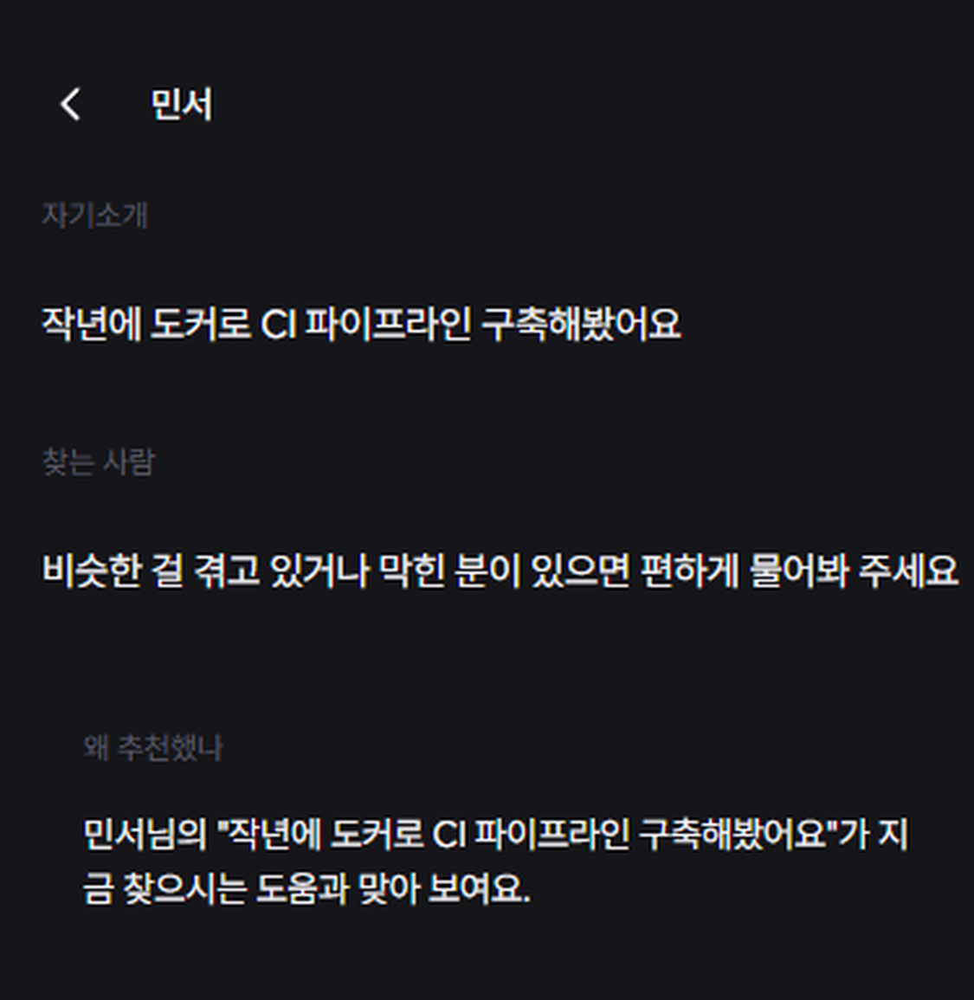

30분
주어진 네트워킹 시간
0명
행사장에서 아는 사람
3장
받은 명함
0건
시작한 대화
사람이 없어서가 아니라, 누가 어떤 이야기를 원하는지 알 수 없는 점이 원인
Bside
Connect with who's beside you.
같은 행사에 온 사람 중 지금 만나고 싶은 사람을 찾아주는 앱
코쓱톤 2026 | TEAM ○

가정한 참가자 한 명의 30분
30분
주어진 네트워킹 시간
0명
행사장에서 아는 사람
3장
받은 명함
0건
시작한 대화
사람이 없어서가 아니라, 누가 어떤 이야기를 원하는지 알 수 없는 점이 원인
2
자기 행사의 네트워킹이 효과적이라고 답한 주최자 비율
58%
TechBBQ 전용 앱 설치율
39%
앱 설치자 중 미팅 수락률
행사 전에 앱 설치, 프로필 작성, 미팅 예약을 모두 마쳐야 하는 구조
3

01
두 줄 입력
계정 없이 30초
02
같은 방 참가자
46명 중 16명을 추천으로 추림

03
추천과 이유
왜 이 사람인지 원문으로 설명

04
1:1 채팅
수락 절차 없이 바로 시작
4
시연 영상
80초 · 실기기 2대 촬영
자기소개와 교류 의도를 따로 입력받는다

실제 화면. 추천마다 양쪽 원문을 근거로 이유를 붙인다
프로필만 받는 서비스
경력과 기술 태그
비슷한 사람을 찾아주지만, 오늘 무엇을 원하는지는 모름
Bside
자기소개 + 교류 의도
자기소개가 같아도 교류 의도가 바뀌면 추천이 바뀜
6
추천 상태 5종.
ready, pending, unscored,
failed, unavailable을 구분한다.
평가하지 않은 후보를 평가한 것처럼 보이지 않음.
읽기는 모델을 기다리지 않음.
추천이 늦거나 실패해도 목록과 채팅은 그대로 동작함.
7
추천 16명이 표시된 목록
8
핵심 지표는 주최자가 다음 행사에도 쓰는지 여부
시장 관행
행사 네트워킹 업체는 모두 주최자에게 과금한다. 참가자에게 받는 곳은 없다
€700 ~ $18,000
업체별 연간 또는 행사당 단가
9
Bside
네트워킹 시간에 누구에게 말을 걸어야 할지 알려주는 앱
감사합니다.
Brella, Swapcard가 이미 AI 매칭을 하는데요?
그 서비스들은 사전 계획형입니다. 행사 전에 앱을 깔고 프로필을 채우고 미팅을 예약합니다. 그래서 대표 사례도 설치율 58%, 수락률 39%입니다.
저희는 현장 즉흥형입니다. 두 줄을 적으면 30초 뒤에 같은 방에서 지금 맞는 사람과 그 이유를 받습니다.
Brella 벤치마크, TechBBQ 사례
백업
행사 앱은 이미 많은데 왜 또 만드나요?
기존 서비스는 프로필을 받습니다. 경력과 기술 태그로 비슷한 사람을 찾아주지만, 그 사람이 오늘 무엇을 원하는지는 모릅니다.
저희는 자기소개와 교류 의도를 따로 받습니다. 같은 사람이라도 오늘 배포를 물어보고 싶은 날과 팀원을 구하는 날의 추천이 달라집니다.
국내 이벤터스, 온오프믹스, 페스타 중 참가자 간 매칭을 제공하는 곳은 없습니다.
백업
추천이 안 맞거나 아예 안 나오면요?
이유를 지어내지 않습니다. 평가하지 못한 후보는 unscored로 남기고 추천 이유를 비웁니다. 근거 없는 설명을 ready로 표시하지 않습니다.
추천이 0건이어도 같은 방 전체 목록은 그대로 보이고 채팅도 됩니다. 추천은 순서를 바꿀 뿐 목록을 대체하지 않습니다.
원문을 고치면 추천을 다시 계산합니다. 오래된 결과가 새 입력의 추천을 덮어쓰지 않도록 양쪽 원문 버전을 확인합니다.
백업
개인정보와 안전은 어떻게 됩니까?
계정이 없습니다. 닉네임과 두 줄만 받고 이메일이나 전화번호를 요구하지 않습니다.
원문과 대화는 같은 방 참가자에게만 보입니다. 참여를 중단하면 목록과 추천 후보에서 빠지고 새 메시지가 막힙니다.
행사 종료 1시간 뒤에 원문, 대화, 추천 캐시를 삭제합니다. 정리 작업은 1분 주기로 돌고, 서버가 내려가 있었다면 재기동 뒤에 밀린 삭제를 실행합니다.
백업
확장은 어디까지 되나요?
사람이 모여 있고 서로를 모르는 자리면 같은 구조가 그대로 돕니다. 해커톤, 컨퍼런스, 사내 온보딩, 대학 신입생 오리엔테이션입니다.
국내 신입 퇴사 사유 1위가 조직·직무 적응 실패로 49.1% (경총). 적응은 첫 관계에서 갈립니다.
한국경영자총협회
백업